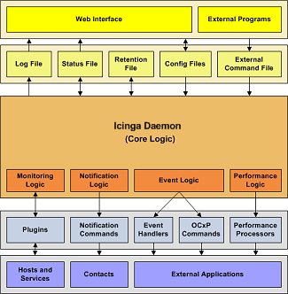

Icinga can be easily integrated in your existing infrastructure. There are several methods of integrating Icinga with the management software you're already using and you can monitor almost any type of new or custom hardware, service, or application that you might have.

To monitor new hardware, services, or applications, check out the docs on:
To get data into Icinga from external applications, check out the docs on:
To send status, performance, or notification information from Icinga to external applications, check out the docs on:
The following documents show some examples on how to integrate Icinga with external applications:
TCP Wrappers (security alerts)
SNMP Traps (Arcserve backup job status)
mklivestatus (interface from Icinga to several addons like NagVis and Thruk)
© 1999-2009 Ethan Galstad, 2009-2017 Icinga Development Team, https://www.icinga.com